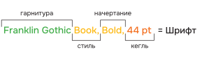
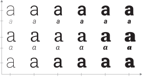
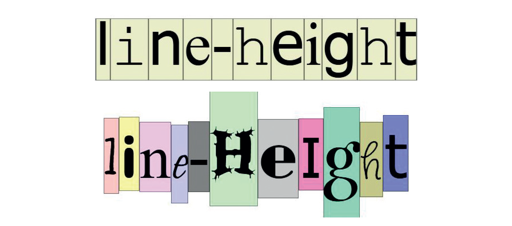
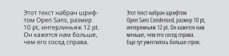

Шрифт
В этой главе содержится вся необходимая теория, которой будет достаточно для нашего уровня. Мы узнаем, как выбрать шрифт и подобрать к нему пару. Как видеть плохие шрифты.
Термины
Начертание — это комплект знаков одной жирности, контраста и рисунка в рамках одного шрифта. Когда мы выбираем между параметрами regular / italic / condensed, мы выбираем именно между начертаниями.

←
1
Начертания
Начертание – это набор решений в рамках одного параметра: жирности, рисунка буквы, пропорций или контраста
Шрифт — самый неуловимый термин, который из-за смены технологий печати менял свое значение. Исторически — это набор знаков одного начертания конкретного кегля, то есть «Inter Regular 12 pt» (→рис. 78). То есть это еще более узкий термин, чем начертание. Называя последнее, мы бы просто сказали «Inter Regular». В эпоху, когда печать происходила при помощи отпечатка буквы на листе, все кегли для гарнитуры вырезали отдельно, то есть был отельный ящичек для знаков кегля 12, другой для кегля 14 и т. д (→рис. 79). Потребность делить начертание шрифта еще и на кегли отпала, потому что теперь он легко масштабируется во время работы на компьютере. Поэтому сейчас термин «шрифт» в разговорной речи может использоваться как синоним «начертания». Когда мы говорим друзьям «смотрите, какой классный шрифт я нашла, тут так много начертаний», речь идет не о шрифте, а о гарнитуре шрифта (то есть наборе начертаний шрифта) в классическом понимании этого термина. Если слышим что‑то вроде «я нашла подходящий шрифт, но у него всего одно начертание» в этом случае абсолютно корректно употребляется слово «шрифт». В разговорной речи термином «шрифт» часто заменяют и начертание, и гарнитуру, и это понятно, потому что хочется иметь одно объединяющее слово для набора знаков, который мы выбрали и хотим быстро обсудить с другими людьми. Сейчас в профессиональной речи термин шрифт спокойно употребляется как обобщающее слово для всех стилей и начертаний шрифта.

←
2
Академическая трактовка термина «Шрифт»
Гарнитура — это набор начертаний, объединенный общим дизайнерским решением. Например: Franklin Gothic. Гарнитура всегда состоит из несколько начертаний. Мы можем сказать «в этой гарнитуре целых 3 начертания: regular, medium и bold», но с академической точки зрения будет неправильно применить термин «гарнитура» к шрифту, состоящему из одного начертания.

←
3
Гарнитура
Супергарнитура — это гарнитура, в которой предусмотрены начертания с принципиально разным рисунком: с засечками + без засечек, начертания с разным контрастом (не путать с жирностью), со скруглениями, с эффектом трафарета. Такие шрифты очень удобны в использовании: несмотря на стилистическую разницу, они хорошо сочетаются между собой и их можно использовать в качестве шрифтовой пары. Например, для основного набора использовать начертание с засечками, наиболее удобное для человеческого глаза, а для мелких подписей — без засечек. Таким образом мелкая типографика не только не потеряет читаемость, но и останется в рамках одной художественной задумки с основным шрифтом. Пример: гарнитуры Roboto, Roboto Serif и Roboto Slab собираются в супергарнитуру (→рис. 80 и 82).

←
4
Супергарнитура Roboto
Таким образом, вы ищете гарнитуру, когда вам нужно найти шрифт с большим количеством начертаний. Вы набираете конкретный текст шрифтом, так как у него есть выбранный кегль и начертание. Вы выбираете между начертаниями, когда решаете, сделать шрифт жирным (bold) или курсивным (italic). А если вам хочется найти такой шрифт, в котором будет и антиква, и гротеск, то вам нужно искать супергарнитуру.

←
5
Кегельная и НЕ кегельная площадка
Кегль. Это НЕ высота буквы! Это невидимый контейнер, в котором расположен каждый знак шрифта. Контейнер называется «кегельная площадка», а «кегль» — это как раз таки его высота. Раньше печать происходила за счет того, что выпуклые буквы отпечатывались на плоском листе бумаги. Каждая буква находилась на плоской металлической кегельной площадке, и эти площадки нанизывались на печатную машину. В те времена кегельные площадки имели фиксированную высоту, что делало процесс печати систематизированным. Благодаря этому можно было сочетать любые шрифты одного и того же кегля в одной строчке (→рис. 83). Например, любой шрифт 12 кегля находился на площадке, равной 4,236 мм. Шрифт 24 кегля на площадке 8,472 мм. Один пункт равнялся 0,353 мм.

←
6
Кегельные площадки раньше и сейчас
Сейчас высота кегельной площадки (то есть кегль) у шрифтов не совпадают, так как отпала надобность в их состыковке (→рис. 84). На компьютере нас интересует только высота видимого знака. В наше время шрифтовики продолжают закладывать внутрь каждой кегельной площадки межбуквенные пробелы по бокам знака (апроши), а также воздух сверху и снизу буквы.
←
7
Важные линии для шрифтов, которые стоит запомнить
В печати минимально возможный кегль — это 4 pt. Если говорить про величину, которая будет комфортна для чтения, это кегль 8-14 pt (в интерфейсе минимум 12 pt). Сейчас узнаем, почему нет четких рекомендаций или одного размера.
Во-первых, восприятие размера шрифта зависит от его рисунка. То, насколько большим нам кажется шрифт, зависит от количества белого пространства внутри и вокруг буквы. Чем оно больше, тем больше шрифт. Поэтому зауженные надписи кажутся немного меньше, чем те, что набраны обычным начертанием того же кегля. То же самое происходит с жирными начертаниями шрифта.

←
8
Восприятие размера зависит от рисунка шрифта
Во-вторых, оптимальный размер шрифта зависит от формата книги. Большему формату — больший кегль. Это происходит в том числе из-за того что длина колонки не бесконечна, она ограничена 70-ю символами при задаче обеспечить комфортное чтение. В этой книге ширина текстового блока вмещает в себя 60-65 символов. В выбранном макете такой блок выглядит гармонично. При увеличении формата, текстовый блок будет выглядеть слишком маленьким. Кроме того, книги большИх форматов читают с более дальнего расстояния.
В-третьих, в названии шрифта может находиться подсказка размера, в котором он будет лучше всего смотреться. Например, "Caption" разрабатывался шрифтовиками специально для маленьких размеров до 12 pt; "Text" — для 12‑18 pt;"Subhead" — для 18‑48 pt и так далее (→рис. 87). Подсказки по всем оптическим размерам вы найдете чуть далее в подглаве «Классификация».

←
9
Как при практически одинаковой высоте букв, начертание «Caption» кажется больше и выигрывает в мелком кегле
Для мелкого набора (менее 7‑8 pt) не стоит брать шрифт с высоким контрастом штрихов (это соотношение штрихов от 1:4 до 1:10, умеренным считается соотношение 1:2 и 1:3). От него устают глаза, и в мелком масштабе он начинает рябить (→рис. 88). Если тебе ну очень понравился шрифт с высоким контрастом, и ты хочешь использовать именно его – используй его только в заголовке.

←
10
Шрифт Bodoni PT, опический размер "Display", кегль 59pt / 10pt
Таким образом, для книжки формата А5 будет оптимально начать с кегля 10 или 12. Не стоит набирать текст кеглем меньше 4 pt: он может не пропечататься или быть слишком неудобным для чтения. При выборе оптимального размера шрифта полезно опираться на формат книги: если используется формат больше А5, нужно точно начать с кегля больше 10‑12 pt. Для маленьких подписей не стоит брать контрастный или узкий шрифт, потому что эти пропорции делают буквы визуально меньше, чем он есть на самом деле. После того, как тебе понравится результат набора, обязательно распечатай и прочитай получившийся текст — только это даст гарантию, что при финальной печати его будет удобно читать, и он будет выглядеть хорошо.
Параметры шрифта
У любого шрифта есть несколько параметров вроде контраста и уровня открытости знаков, используя которые в некоторых шрифтовых агрегаторах уже можно сузить поиск и сэкономить время. Также, зная параметры, можно отлично и со вкусом подбирать шрифтовые пары, чем мы и займемся позже. Мы не будем рассматривать все параметры и возьмем следующие:
1. Контраст – это разница между шириной самого тонкого и самого толстого штриха знака. Для комфортного долгого чтения лучше всего подходит отсутствие контраста или умеренный контраст, когда самый тонкий штрих знака относится к самому толстому как 2:3 (→рис. 100).

←
11
Контраст
2. Насыщенность (Font-weight) – это жирность: Regular, SemiBold, Bold и так далее.
3. Ширина букв (Font-stretch) или, другими словами, горизонтальные пропорции. Естественно, для долгого чтения подойдет обычная ширина, в которой и выполнены основные начертания шрифта. Начертание Narrow идеально использовать в узких колонках, где хочется увидеть обычный шрифт, но для него не хватает пространства (→рис. 101). Иногда шрифтовики по ошибке называют так очень узкие шрифты (Condensed). Condensed (узкий) или Extended (широкий) — это два полюса, которые созданы для применения в больших размерах в заголовках. Narrow, Condensed и Extended могут быть как начертаниями внутри одного шрифта, так и отдельной гарнитурой, и в обоих случаях шрифт чаще всего будет иметь в названии эти наименования, например «DIN Condensed», «Narrow» и т. п. Так что эти слова можно вбивать в поисковике, если для стиля нужно найти шрифт именно с такими параметрами.

←
12
Разница в ширине букв и блока у начертаний Normal и Narrow
6. Апертура — это степень открытости знаков. Открытая форма — это один из признаков шрифта, который удобен в долгом чтении.
←
13
Степень открытости буквы «C»
4. Высота строчной относительно прописной или, другими словами, вертикальные пропорции.
5. Характер примыкания штрихов. По нему можно судить о том, отсылает ли шрифт к рукописным, более ранним шрифтам, а значит к исторической эстетике.
←
14
7. Ось овала. Если можем поделить букву «о» пополам и половинки получатся одинаковые. В одном шрифте могут сочетаться наклонная ось у буквы «e» и вертикальная у буквы «o».
←
15
8. Разница в ширине букв внутри одного шрифта: моноширинные, сближенные или выраженно разные. Моноширинные шрифты подойдут для цифр, и они особенно хороши в таблицах, когда визуально видно, что, к примеру, все шестизначные числа будут иметь одинаковую ширину. Сближенные пропорции знаков — это более современная черта шрифта, чем разноширинность, которая была характерна первым антиквам, отсылающим к человеческому почерку. Нам немного удобнее читать шрифты, в которых буква «ш» заметно длиннее буквы «г», то есть с разной шириной знаков, но это не так принципиально для набора, как равномерное межбуквенное пространство.

←
16
Статический и динамический тип шрифта
пример из лекции Александры Корольковой
Некоторые качества связаны друг с другом и часто присутствуют вместе. Вместе они дают возможность отнести шрифт к динамическим или статическим. Например, у шрифта с закрытой апертурой чаще всего дополнительный штрих плавно входит в основной, а буквы (прописные) примерно одинаковой ширины. При сочетании этих качеств получается статический тип шрифта. У шрифта с разной шириной букв, с большой вероятностью, встретятся более открытые формы знаков, и этот шрифт подойдет под описание динамического типа. У динамики и статики шрифта, как и у всех параметров, есть исторические корни, связанные с разными традициями каллиграфии.
Отсылка шрифтов на инструменты каллиграфии. Когда специалисты вырезали шрифты для первой печатной машины, они старались как можно точнее воспроизвести человеческий каллиграфический почерк. В то время писали ширококонечным пером, поэтому логика построения знаков в шрифте соответствовала логике быстрого письма этим инструментом. В 18 веке появилось перо из металла — остроконечное, и оно тоже повлияло на развитие шрифтов. Перо позволяло менять толщины штриха при письме в зависимости от нажатия, а не от поворота пера, как это делало плоское. В это время появились шрифты с большИм контрастом. Чем ближе к нам по времени, тем реже шрифтовики ставят целью повторение человеческого почерка. Теперь мы все чаще ориентируемся на созданные ранее шрифты и на логику их построения. Но в основе шрифта все еще лежит логика письма, и она позволяет создать классификацию шрифтов, выделять типажи, чтобы проще ориентироваться в их многообразии.
Мы изучили, как параметры шрифта влияют на восприятие текста и теперь можем заранее понять, какие параметры нам хочется видеть в шрифте.

←
17
В InDesign существует фильтрация в поиске шрифтов (→рис. 106). На момент написания этого руководства она не всегда работает корректно, но основная часть шрифтов, которые появляются после включения фильтрации, будет соответствовать запросам. Таким образом можно сузить поиск шрифтов на своем компьютере.